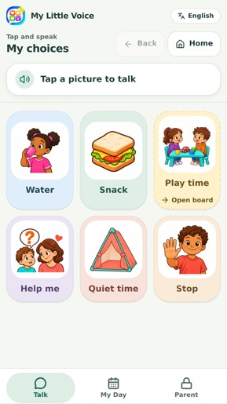
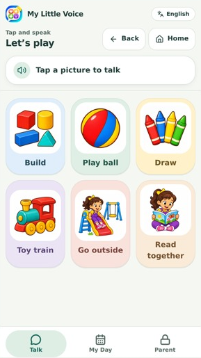
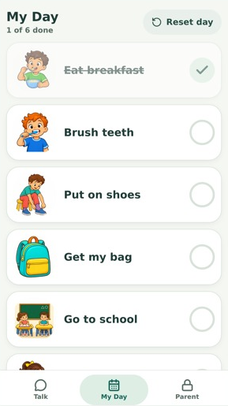
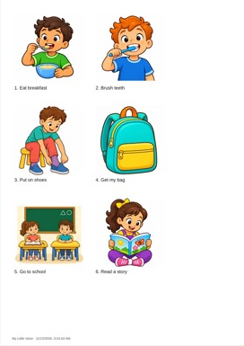

Tap and speak
Tap one picture to hear its word or message, like “Water” or “Help me.”
Offline AAC for Android
A snack, a favourite game, a moment to stop. My Little Voice helps children who use little or no speech share what they want to say by tapping pictures.

Getting started
AAC stands for augmentative and alternative communication. A board is a page of pictures your child can tap to say something aloud. Start with one familiar part of their day.
Think about what your child reaches for at snack time or playtime. A sandwich, a ball and a favourite toy are a good place to begin. Include Stop or Help me so they can tell you more than what they want.
During setup, choose Help me get started to pick pictures, then Finish setup. To add more later, open Parent, choose Boards, select the board you want, then tap Add pictures. Select your pictures and confirm.
In Parent, open Pictures & drawing, then My photos. Import and save a photo. You can now find it under My photos when adding pictures to a board.
To change what a picture says, hold the card and choose Edit picture. Set the Text on button to “Ball” and the Words to speak to “Let’s play ball,” for example.
Go back to Talk. At snack time, tap Water as you say “water” and offer a drink. Pause. Your child might tap a picture, point, gesture or simply watch. Give them time to explore.

Inside the app
Start with a single picture. When your child wants another way to share an idea, you can try one of the other modes together.
Tap one picture to hear its word or message, like “Water” or “Help me.”
Choose pictures in order, then speak the whole message when it’s ready.
Use the keyboard to write your own words and hear them spoken aloud.
Sketch a shape or an idea, then show the screen to the person you’re talking with.
Daily schedules
Use My Day to put a routine in pictures. At breakfast, look at what’s coming up together. Check off each step as you go, from brushing teeth to picking up a school bag.
Save an A4 PDF or print the schedule to put beside the door. You can also print individual picture cards to take along.


Choose one language for the menus and another for the words your child hears. Optional voices can be downloaded during setup or later in Parent settings. Once set up, communication works offline.
You need an internet connection to install the app, download optional voices and get updates. Once setup is complete, communication and speech work offline.
Your boards, photos and recordings stay on your device. In the password-protected Parent area, you can make a local backup and restore it later.
My Little Voice is designed for Android phones and tablets. Once the app launches, you can check your device on Google Play.
A parent made My Little Voice for her nonverbal daughter so they could communicate offline with familiar pictures and the words they use at home.
You can read it here or offline in the app’s Parent area. .